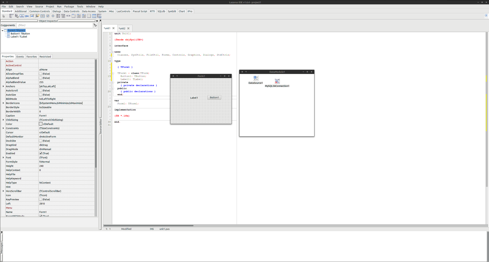
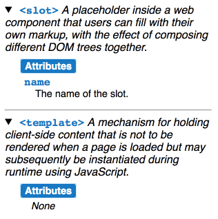

Web Components
Last updated: April 2017
What is a component?
There is sub paradigm in programming named
"Component-Based Development (CBD)
",
that takes chunks of code and makes it reusable.
The idea is to use many parts of code that togather can create a bigger solution.
So it's like Micro-servies ?
Nope!
Micro-services are parts of actual programs that do one things that togather creates a logic
Components cannot be stand-alone, and must be used inside a program
History of CBD
Douglas AdamsIn the beginning the Universe was created.
This has made a lot of people very angry and been widely regarded as a bad move.
The idea started in the late 60's, by Douglas McIlroy who written a document for NATO.
In 86, the Objective-C language created support for componenet based programming interface.
In 91, IBM created an environment that uses component based module (known as System Object Model or SOM)
- Shared library (DSO) for reusable code.
Later also DSOM (distributed SOM)
Before The web
Web Componenets
- Standard by W3C.
-
Contains four types of main elements:
- Shadow DOM
- Custom Elements
- Templates
- HTML Imports
- Still in draft mode (except for templates).
Shadow DOM
Imagine that you have a data that changes a lot.
It is a bad advice to constantly change the entire DOM when the data changes.
Why?
A lot of rendering, changing a lot of lines, will result in very slow and endless pain to the user.
Shadow DOM, provides an encapsulation of CSS and DOM, allowing to make changes, and returns the result back to the main DOM.
Example:
// Create shadow DOM
var shadow = document.querySelector('#hostElement')
.attachShadow({mode: 'open'});
// Add some text to shadow DOM
shadow.innerHTML = '<span>Here is some new text</span>'
// Add some CSS to make the text red
shadow.innerHTML += '<style>span { color: red; }</style>'
Custom Elements
Allowing to create custom HTML elements, that can have different properties attached on runtime, unlike the custom tags that was added to HTML5.
For example, it is possible to attch what the component will do when it is first added to the DOM, and different action when it is removed.
Example:
If nothing appeared below, then your browser does not support Custom Elements yet.
<x-product data-name="Ruby" data-img="https://s3-us-west-2.amazonaws.com/s.cdpn.io/4621/ruby.png" data-url="http://example.com/1"></x-product>
<x-product data-name="JavaScript" data-img="https://s3-us-west-2.amazonaws.com/s.cdpn.io/4621/javascript.png" data-url="http://example.com/2"></x-product>
<x-product data-name="Python" data-img="https://s3-us-west-2.amazonaws.com/s.cdpn.io/4621/python.png" data-url="http://example.com/3"></x-product>
Example (continue):
// Create a class for the element
class XProduct extends HTMLElement {
constructor() {
// Always call super first in constructor
super();
// Create a shadow root
var shadow = this.attachShadow({mode: 'open'});
// Create a standard img element and set it's attributes.
var img = document.createElement('img');
img.alt = this.getAttribute('data-name');
img.src = this.getAttribute('data-img');
img.width = '150';
img.height = '150';
img.className = 'product-img';
// Add the image to the shadow root.
shadow.appendChild(img);
// Add an event listener to the image.
img.addEventListener('click', () => {
window.location = this.getAttribute('data-url');
});
// Create a link to the product.
var link = document.createElement('a');
link.innerText = this.getAttribute('data-name');
link.href = this.getAttribute('data-url');
link.className = 'product-name';
// Add the link to the shadow root.
shadow.appendChild(link);
}
// Monitor the 'name' attribute for changes.
static get observedAttributes() {return ['name']; }
// Respond to attribute changes.
attributeChangedCallback(attr, oldValue, newValue) {
if (attr == 'name') {
this.textContent = `Hello, ${newValue}`;
}
}
}
// Define the new element
customElements.define('x-product', XProduct);
Example (continue):
body {
background: #F7F7F7;
}
x-product {
display: inline-block;
float: left;
margin: 0.5em;
border-radius: 3px;
background: #FFF;
box-shadow: 0 1px 3px rgba(0,0,0,0.25);
font-family: Helvetica, arial, sans-serif;
-webkit-font-smoothing: antialiased;
}
x-product::slotted(.product-img) {
cursor: pointer;
background: #FFF;
margin: 0.5em;
}
x-product::slotted(.product-name) {
display: block;
text-align: center;
text-decoration: none;
color: #08C;
border-top: 1px solid #EEE;
font-weight: bold;
padding: 0.75em 0;
}
Place Holder
There is a tag name <slot>. It is a place holder to change content on runtime inside a component
Templates
The HTML <template> element is a mechanism for holding client-side content that is not to be rendered when a page is loaded but may subsequently be instantiated during runtime using JavaScript.
Think of a template as a content fragment that is being stored for subsequent use in the document.
While the parser doesa process the contents of the <template> element while loading the page,
it does so only to ensure that those contents are valid; the element's contents are not rendered, however.
Example
<table id="producttable">
<thead>
<tr>
<td>UPC_Code</td>
<td>Product_Name</td>
</tr>
</thead>
<tbody>
<!-- existing data could optionally be included here -->
</tbody>
</table>
<template id="productrow">
<tr>
<td class="record"></td>
<td></td>
</tr>
</template>
Example (continue):
// Test to see if the browser supports the HTML template element by checking
// for the presence of the template element's content attribute.
if ('content' in document.createElement('template')) {
// Instantiate the table with the existing HTML tbody
// and the row with the template
var t = document.querySelector('#productrow'),
td = t.content.querySelectorAll("td");
td[0].textContent = "1235646565";
td[1].textContent = "Stuff";
// Clone the new row and insert it into the table
var tb = document.querySelector("tbody");
var clone = document.importNode(t.content, true);
tb.appendChild(clone);
// Create a new row
td[0].textContent = "0384928528";
td[1].textContent = "Acme Kidney Beans";
// Clone the new row and insert it into the table
var clone2 = document.importNode(t.content, true);
tb.appendChild(clone2);
} else {
// Find another way to add the rows to the table because
// the HTML template element is not supported.
}
HTML Imports
<link rel="import" href="myfile.html">
Can we use it now?
Yes, and No
It's still on draft, and not all browser supports all elements of the draft.
But there are two main JS libraries that provide implementation for it
Google Polymer
Bosonic
FIN.
Douglas AdamsIt is not the fall that kills you.
It's the sudden stop at the end.